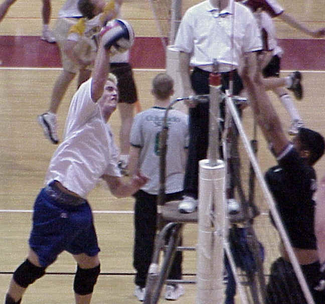

 |
WELCOME
TO THE RICKS COLLEGE MEN'S VOLLEYBALL SITE. THE RICKS VOLLEYBALL CLUB (RVC)
COMPETES IN THE MOUNTAIN WEST VOLLEYBALL
CONFERENCE, which is the most
competitive league in the nation. THE
2001 SEASON LOOKS TO BE VERY PROMISING FOR RVC. THE TEAM HAS GREAT DEPTH
IN ALL POSITIONS WITH NEW TALENT FROM CALIFORNIA, LAS VEGAS, AND COLORADO.
BY BEING APART OF THE MWVC AND COMPETING AGAINST THE TOP DIVISION I AND DIVISION
II SCHOOLS IN THE NATION RVC WILL HAVE VALUABLE TOURNAMENT EXPERIENCE FOR
NATIONALS, AND WITH THE CREATION OF DIVISION III FOR JUNIOR COLLEGES LAST YEAR,
RVC LOOKS TO FINISH STRONG AT NATIONALS IN 2001. |